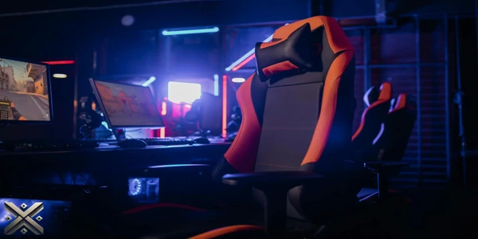
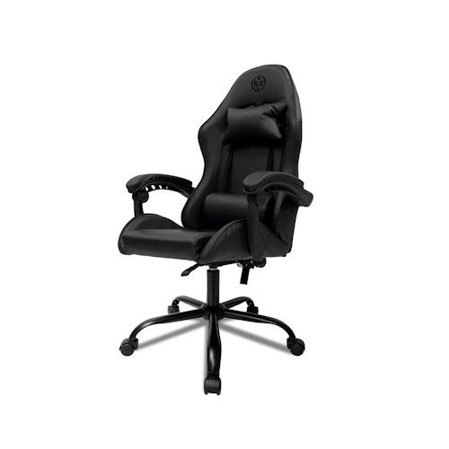
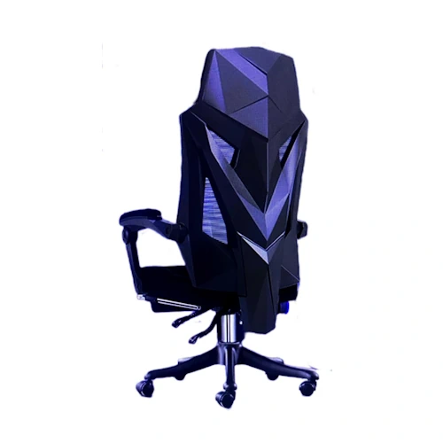
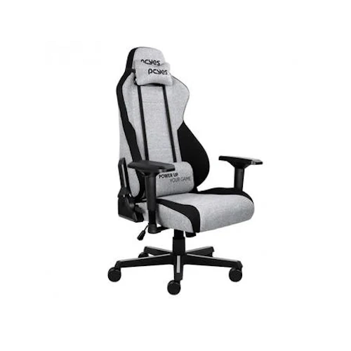
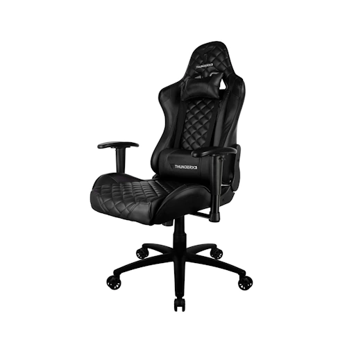
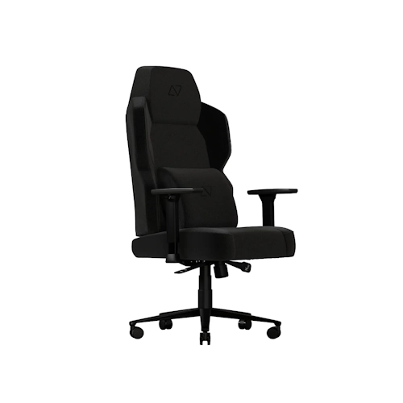
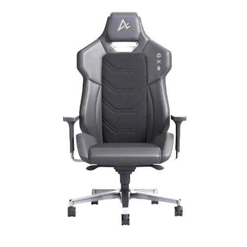

Uma boa cadeira gamer não só proporciona ergonomia e suporte para longas horas de uso, mas também pode prevenir dores e melhorar sua postura. Modelos com ajustes personalizáveis, materiais de qualidade e design moderno fazem toda a diferença na experiência do usuário.
Neste guia, analisamos as principais cadeiras gamer de 2025, destacando seus benefícios, diferenciais e custo-benefício para ajudá-lo a escolher a melhor opção.

As cadeiras gamer são muito mais do que um item de luxo – elas são aliadas da ergonomia e do bem-estar para quem passa longas horas no computador. Com designs inspirados em assentos automotivos, elas oferecem suporte lombar, encosto reclinável e ajustes precisos para proporcionar conforto e prevenir dores. Além disso, os materiais variam entre couro sintético e tecidos respiráveis, garantindo durabilidade e adaptabilidade ao clima.
Escolher a cadeira ideal exige atenção a alguns detalhes importantes. O primeiro é a ergonomia: um bom modelo deve ter apoio lombar ajustável, braços reguláveis e encosto reclinável para acomodar diferentes posturas. O material do revestimento também influencia na experiência – tecidos permitem maior ventilação, enquanto o couro sintético facilita a limpeza. O tamanho da cadeira e o peso suportado devem ser compatíveis com a estrutura do usuário, garantindo conforto e segurança.
Para manter a cadeira sempre impecável, a limpeza deve ser feita regularmente. Utilize um pano úmido com sabão neutro para higienizar o estofamento, evitando produtos abrasivos que possam danificar a superfície. Em modelos de tecido, um aspirador de pó ajuda a remover sujeiras acumuladas, enquanto as partes metálicas podem ser limpas com um pano seco.

Ideal para crianças, adolescentes e iniciantes, a TGT Heron é uma opção acessível, com revestimento em couro sintético e espuma de suporte lombar. O encosto reclinável chega a 135°, e ela suporta até 120 kg. O ponto negativo fica para os apoios de braço fixos e o possível desconforto em longas sessões. Apesar de ser um modelo mais simples, a TGT Heron é uma excelente porta de entrada para quem nunca teve uma cadeira gamer. Seu design é moderno e oferece um conforto razoável para períodos moderados de uso. Se você busca um modelo acessível, essa pode ser uma excelente escolha.
Preço médio: R$ 623

Com encosto reclinável de até 150°, estrutura de metal e revestimento em couro sintético, a Python Fly oferece um descanso retrátil para os pés. No entanto, o material do descanso não é muito resistente. Disponível em várias cores, incluindo rosa. Um dos principais diferenciais dessa cadeira é seu nível de inclinação, permitindo um descanso maior entre as partidas. Seu design moderno e ergonômico também ajudam no conforto, mas pode não ser a melhor opção para quem passa muitas horas sentado. Se você busca uma cadeira versátil e confortável, essa é uma excelente escolha.
Preço médio: R$ 885

Revestida em poliéster e com pistão a gás classe 4, essa cadeira inclui apoios de braço ajustáveis 4D e função relax. Porém, pode ser barulhenta e um pouco grande para espaços reduzidos. O tecido poliéster oferece mais respirabilidade do que o couro sintético, o que pode ser um diferencial para quem mora em regiões quentes. Além disso, seu sistema de inclinação é bastante eficiente para quem deseja maior conforto durante longas sessões de jogo ou trabalho. Embora seu tamanho possa ser um problema em espaços reduzidos, é uma excelente opção para quem busca mais ergonomia.
Preço médio: R$ 1.029

Com design sofisticado, acabamento em poliuretano e almofadas para pescoço e lombar, a TGC12 suporta até 120 kg e tem encosto reclinável até 135°. Os apoios de braço 2D possuem ajuste limitado. Seu acabamento premium e estofamento em formato de losango ajudam a aumentar o conforto e a durabilidade. O modelo também se destaca pela variedade de cores, permitindo maior personalização do ambiente. Embora não tenha os apoios de braço mais personalizáveis do mercado, seu custo-benefício faz dela uma das opções mais interessantes na faixa intermediária.
Preço médio: R$ 1.214
Suportando até 150 kg, essa cadeira tem estrutura de aço, espuma espessa e almofada magnética de memória. Seu ponto fraco são as rodas de nylon, que podem riscar pisos mais sensíveis. Além disso, a DT3 Nero XL conta com um excelente suporte lombar ajustável, ideal para quem precisa de mais ergonomia no dia a dia. Seu tecido de linho é mais respirável e confortável para climas quentes, tornando-a uma escolha versátil. Se você busca uma cadeira de alta resistência e durabilidade, esse modelo pode ser ideal.
Preço médio: R$ 1.699

Com revestimento em linho e estrutura resistente, suporta até 130 kg e tem apoios de braço ajustáveis em 4D. Seu design pode não ser ideal para pessoas mais altas. O tecido de linho proporciona um toque suave e maior ventilação, evitando o superaquecimento durante longos períodos de uso. Com uma base de alumínio e aro de metal para os pés, a resistência é um dos destaques desse modelo. Sua estética minimalista a torna uma excelente opção para quem quer algo discreto, sem abrir mão do conforto.
Preço médio: R$ 1.829

Com garantia de 7 anos, estrutura em alumínio, sistema anti-impacto e encosto móvel, a Alpha Pro é uma das melhores opções premium. No entanto, seu preço é elevado. Seu sistema de bloqueio em cinco posições permite um ajuste mais preciso para diferentes necessidades, enquanto o apoio de braço ajustável oferece maior conforto. Além disso, seu revestimento automotivo garante maior durabilidade e resistência. Para quem deseja um modelo premium e altamente ajustável, a Alpha Pro é um investimento que vale a pena.
Preço médio: R$ 2.163
Seja qual for sua necessidade, há uma cadeira gamer ideal para você. Deixe seu comentário com sua opinião ou sugestão de outras cadeiras que merecem estar nessa lista!